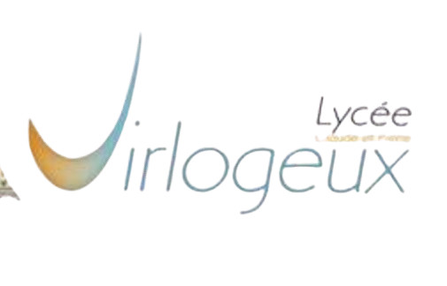

Mes Expériences
Mon Parcours Scolaire
Études supérieures
Les Études supérieures correspondent à la partie actuelle de ma vie. En effet, je suis actuellement en deuxième année de BUT Informatique à l'IUT des Cézaux à Clermont-Ferrand.
Lycée

Mon lycée s'est déroulé dans le même établissement, au lycée Claude et Pierre Virlogeux à Riom où j'ai obtenu mon bac maths physique avec mention bien accompagné de deux options.
Collège
J'ai d'abord passé ma 6e dans le collège Champclaux à Châtel-Guyon.
Puis j'ai fini cette étape de ma vie dans le collège Michel de l'Hospital situé à Riom où j'ai obtenu mon Brevet des Collèges avec la mention Très Bien.
Mes Expériences Professionnelles
🌽 Castration de maïs
Travail manuel en extérieur durant l’été, développant rigueur, persévérance et endurance face aux conditions agricoles exigeantes.
⚖️ Stage en cabinet d'avocat
Découverte du monde juridique, observation d'audiences au tribunal, gestion de tâches administratives et organisation du classement de dossiers confidentiels.